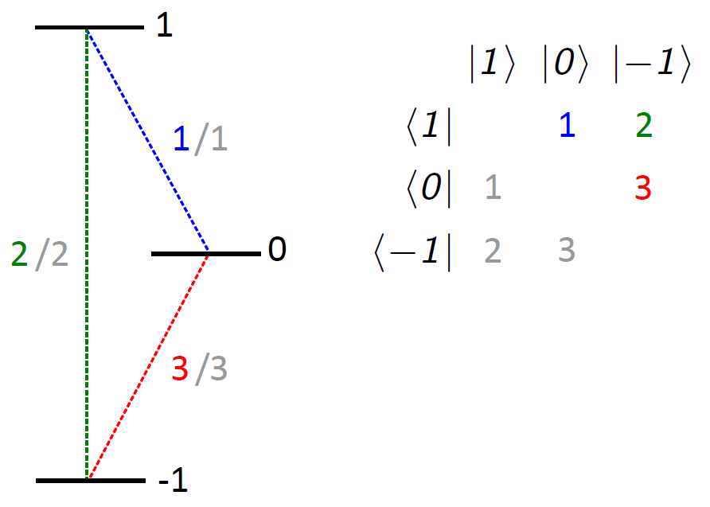
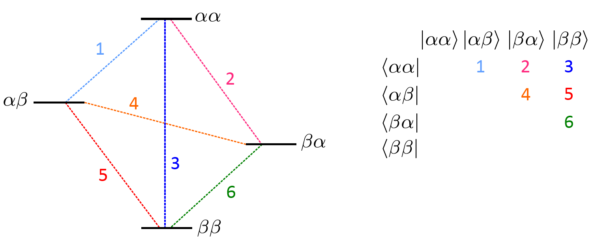

- EasySpin
- Documentation
- Publications
- Website
- Forum
Simulation of spin dynamics with arbitrary wave forms
spidyan(Sys,Exp) spidyan(Sys,Exp,Opt) sig = spidyan(...) [t,sig] = spidyan(...) [t,sig,out] = spidyan(...)
See also the examples on how to use spidyan.
This function simulates spin dynamics of pulse EPR experiments with arbitrary waveforms.
The focus of spidyan lies on investigation of spin dynamics and on effects of non-ideal or frequency-swept pulses on the outcome of experiments.
Hence, the outputs of spidyan are a time domain signal and density matrices of a single spin packet.
For simulating transients or spectra of realistic samples, use the function saffron, which is based one the same propagation engine.
Time-domain signals or state trajectories simulated by spidyan are typically further analyzed by (Matlab) software home-written by the user.
At the expense of requiring more knowledge on spin quantum mechanics than higher-level EasySpin functions, spidyan provides a lot of freedom in specifying input and output (e.g., custom (non-physical) initial states, transition selective excitation operators, freely-choosable detection operators,...).
This freedom should help you to investigate your spin dynamics problem in depth.
There are up to four possible output arguments.
t (time in microseconds) and the simulated data in sig (time domain trace).
For a single acquisition or a multidimensional experiment where all time traces have the same length, t and sig are numeric arrays.
For multidimensional simulations where the length of the trace changes, t and sig are cell arrays.
out contains additional output such as the final state in out.FinalState (or states for a multidimensional experiment) after propagation and the cell array out.StateTrajectories which contains state trajectories (density matrices) at each point of detection, but is available only if requested through Opt.StateTrajectories.
A detailed discussion of the structure of the output can be found further below.
The three input arguments to spidyan are
Sys: spin system (paramagnetic molecule)Exp: experimental parametersOpt: simulation options
Sys is a spin system structure.
Most of the regular fields of Sys can be used for the construction of the spin Hamiltonian.
Line broadening parameters used by other simulation functions (lw, lwpp, gStrain, etc.) are ignored.
Some additional fields can be used with spidyan: To facilitate working with frequency-swept pulses, the field ZeemanFreq is available.
For simulations with relaxation, at least generic relaxation times T1 or T2 should be provided.
If only one is provided, the other one is set by default to a very large value (1010 microseconds), essentially switching that type of relaxation off.
ZeemanFreqS of the spin system structure.
It is possible to use ZeemanFreq in combination with g.
If a non-zero Zeeman frequency is found, any g-values given for this electron spin are ignored.
T1spidyan to simulate relaxation effects, it is necessary to switch relaxation on with Opt.Relaxation (see below).
T2spidyan to simulate relaxation effects, it is necessary to switch relaxation on with Opt.Relaxation (see below).
initStatespidyan simulations with a custom initial state, which must be provided in matrix form.
By default, the initial state assumes the high temperature approximation for all electron spins.
The structure of density matrices (ordering of operators in terms of product Zeeman basis states) is explained at sop.
Sys.S = 1/2; % Creates an isolated spin 1/2 Sys.initState = [0 1/2; 1/2 0]; % Start simulation from Sx
eqStateeqState that the system relaxes to.
This state has to be a density operator matrix form.
By default the initial state is used as equilibrium state.
The equilibrium state is only used if relaxation is active, else it is ignored.
Exp contains experimental parameters.
FieldSys.ZeemanFreq.
Sequence
P90.Type = 'rectangular'; % Define Pulse, see examples for more details
P90.tp = 0.032; % Pulse Length in microseconds
P90.Flip = pi; % Flip angle of the pulse
P180.Type = 'rectangular'; % Define Pulse, see examples for more details
P180.tp = 0.032; % Pulse Length in microseconds
P180.Flip = pi; % Flip angle of the pulse
Exp.Sequence = {P90 0.2 P180 0.4}; % Creates a two pulse (echo) sequence, with an inter-pulse
% delay of 0.2 microseconds and a final free-evolution period
% of 0.4 microseconds
mwFreqPulse.Frequency) need to be defined relative to it:
Exp.mwFreq = 33.5; Pulse.Frequency = [-0.25 0.25]; % sweep range of pulse if 'Exp.mwFreq' is definedIf
Exp.mwFreq is omitted, the frequency range of the pulse has to be written in absolute frequencies:
Pulse.Frequency = [33.25 33.75]; % same pulse as above, but no Exp.mwFreqIf you want to use a resonator in your simulation it is necessary to provide
Exp.mwFreq.
PhaseCycle
PC = [0, 1; pi, -1]; % phase cycle
Exp.PhaseCycle = {[] PC}; % phase cycles the second pulse
Phace cycling that steps more than one pulse simultaneously is not available through the PhaseCycle structure, but can be achieved through adding an additional indirect dimension to the experiment (see Dim).
DetEventsExp.DetEvents = true; % the entire sequence is detected Exp.DetEvents = [0 0 1 1]; % expectation values are only returned the third and fourth event Exp.DetEvents = []; % no detection Exp.DetEvents = 0; % no detectionIf the field
DetEvents is not provided, detection is switched off by default.
Detection operators can be defined in Opt.DetOperator.
If DetEvents is active, but no detection operator is defined, Ŝ+ is used for all electron spins.
The length of DetEvents has to be either 1 or the same length as Exp.t.
TimeStepExp.Frequency) and prints it to the command line.
If the user provides a time step, the program checks if the Nyquist theorem is not fulfilled for the frequency ranges of the pulses and, if not, an error is thrown.
The required TimeStep depends on the choice of simulation frame, and hence on Opt.FrameShift (see there and in the examples).
Any time steps given in the pulse definition are ignored.
By defining nPoints and DimX it is possible to vary parameters of the pulse sequence and create one or multidimensional experiments.
This also changes the structure of the output compared to a single acquisition.
More details on how the output changes can be found below.
nPointsExp.nPoints = [10 150]; % 10 points along the first indirect dimension, 150 along the second
Dim1, Dim2,... Dim1, Dim2,... provide the fields that are to be changed along the indirect dimensions (field nPoints).
The first data point always uses the values defined initially in the experiment definition.
All fields that appear in the pulse definition can be changed, e.g:
Exp.Dim1 = {'p2.Flip' pi/8}; % increments the flip angle of the second pulse by pi/8 each step
For free evolution events only the length can be changed:
Exp.Dim1 = {'d3' -0.1}; % decrements the length of the third delay by 100 ns each step
Several parameters can be changed in one dimension:
Exp.Dim1 = {'p2.Flip' pi/8; 'd3' -0.1}; % changes flip angle of pulse and duration of free evolution
Exp.Dim1 = {'p2.Flip,p3.Flip' pi/8}; % flip angles of 2nd and 3rd pulse are simultaneously stepped
For experiments that involve one or several moving pulses, the identifier Position can be used.
This is only possible for pulses that are not the first or last event in the sequence.
Pulses are allowed to cross, but must not overlap.
Exp.Dim2 = {'p2.Position' 0.1}; % moves the second pulse 100 ns back each step in the 2nd dimension
A list of increments can be used by providing vectors with the precomputed increments.
All increments are always applied to the initial value of the field (as defined in the Exp) and are not related to each other.
Hence, if the value in the experiment definition is desired as first data point of the indirect dimension, the fist element has to be zero:
Exp.nPoints = 4;
% this
Exp.Dim1 = {'d2' [0 0.1 0.2 0.3]};
% is equal to:
Exp.Dim1 = {'d2' 0.1};
Complete freedom is given when it comes to providing the list of increments.
Exp.nPoints = 5;
Exp.Dim1 = {'d2' [0 0.1 0.3 0.65 -0.2]}; % increment of the second delay
However, the program checks that changing lengths of events do not lead to overlapping pulses at any acquisition point.
A special case is the field Frequency in the pulse definition of a frequency-swept or of a monochromatic pulse that is defined by identical initial and final frequency.
Here it is necessary to provide a vector even for a constant increment, with the first element being the change of the initial frequency and the second being the change of the final frequency.
A list of increments can be provided as well, by using ';' as separator:
Exp.Dim1 = {'p1.Frequency' [-0.005 0.005]}; % increases sweep width by 10 MHz each step
Exp.Dim1 = {'p1.Frequency' [0.005 0.005]}; % moves the excitation band by 5 MHz each step
Exp.Dim1 = {'p1.Frequency' [0 0; 0.01 0.01; 0.03 0.03; 0.08 0.08]}; % vector increment
For other pulse parameters that are defined by a vector (e.g., the order of an asymmetric hyperbolic secant (HS) pulse Pulse.n or the list of relatives amplitudes of a Gaussian cascade Pulse.A0), selected elements can be incremented by adding an index to the field name:
Exp.Dim1 = {'p1.A0(3)' 0.1; 'p1.A0(4)' -0.1}; % changes relative amplitudes of the third and fourth pulse in a Gaussian cascade
Exp.Dim1 = {'p1.n(2)' 2}; % increases order of the falling flank of a hyperbolic secant pulse by 2 each step
% Also possible for 'Frequency'
Exp.Dim1 = {'p1.Frequency(2)' 0.005}; % changes only the final frequency of the pulse
Exp.Dim1 = {'p1.Frequency' [0 0.005]}; % identical to the above and not a list of increments!
Adding an indirect dimension also allows for simultaneous phase cycling of two or more pulses (something that can not be achieved through the Exp.PhaseCycle structure):
Exp.nPoints = 4;
Exp.Dim1 = {'p2.Phase,p3.Phase' pi/4}; % changes the phase of the 2nd and 3rd pulse by pi/4 each step
In the above example, the output of spidyan will contain the individual transients from each phase cycling step and manual merging of the dimensions (with proper detection phase/sign) is required to obtain the phase-cycled signal.
The bandwidth limiting effect of a resonator on a pulse can be incorporated.
For all simulations with a resonator the field Exp.mwFreq must be provided and Exp.Frequencies defined in relation to it.
ResonatorExp.Resonator is a structure itself (see example below).
The resonator profile has to be defined using the resonator center frequency nu0 and the loaded Q-value QL (resonator frequency response computed from the ideal transfer function for an RLC series circuit)or the transfer function TransferFunction in combination with the frequency axis nu.
By setting Mode it is possible to compensate for the resonator. Compensation aims to provide a waveform that excites spin packets in the resonator with constant critical adiabaticity if the originally specified waveform would lead to excitation with constant critical adiabaticity in the absence of a resonator (mainly for chirp and hyperbolic secant pulses).
For more details see resonator.
nu0QLnuTransferFunctionMode'simulate' or 'compensate'.
By default the effect of the resonator on the signal is simulated.
If set to 'compensate' the pulse shape is adapted such that it compensates for the resonator profile by using a uniform critical adiabaticity criterion.
Exp.Resonator.nu0 = 33.5; % resonator center frequency in GHz Exp.Resonator.QL = 300; % loaded Q-value
Opt contains additional simulation parameters.
DetOperatorDetOperator is a cell array that contains detection operators.
They can be defined by using the same syntax as in sop (see there):
Opt.DetOperator = {'+1' 'z1'}; % detects Ŝ+ and Ŝz of the first electron spin
Detection operators that can not be defined using the sop syntax, can be provided in matrix form:
Opt.DetOperator = {[0 1; 0 0] [1/2 0; 0 -1/2]}; % the same operators as a above for S = 1/2 in matrix form
If no detection operator is defined, but detection is active, Ŝ+ is used for all electron spins.
If you are interested in the expectation values of Ŝx, it is usually beneficial to use Ŝ+ as the actual detection operator and then take the real part of the obtained signal.
This removes artifacts at the beginning and end of the time traces that are introduced when translating a purely real signal during the signal processing.
FreqTranslationFrameShift) in GHz and for each detection operator separately.
Indexing in FreqTranslation corresponds to the ordering in DetOperator:
Opt.DetOperator = {'+1' 'z1'}; % detects Ŝ+ and Ŝz of the first electron spin
Opt.FreqTranslation = [-33.5 0]; % shifts Ŝ+ by -33.5 GHz
% Ŝz does not contain a rotating component and does not need to shifted
For counter-rotating detection operators (e.g. Ŝ-) the sign changes:
Opt.DetOperator = {'+1' '-1'}; % detects Ŝ+ and Ŝ- of the first electron spin
Opt.FreqTranslation = [-33.5 33.5]; % shifts Ŝ+ by -33.5 GHz and Ŝ- by 33.5 GHz
RelaxationOpt.Relaxation = true; % switches on relaxation for the entire simulation Opt.Relaxation = [0 0 1]; % relaxation is active only during the third eventIf relaxation is switched on, relaxation times (
Sys.T1 and Sys.T2) have to be provided and the simulation is then performed in Liouville space, which slows down the simulation, for larger spin systems tremendously so.
In order to avoid unexpected behavior, if the Opt.Relaxation is not used to switch relaxation on/off for the entire sequence, the length of it has to match the length of Exp.t (all events need to be defined).
SimulationModeSimulationMode provides a tool to change the simulation frame, possible values are 'LabFrame' and 'FrameShift'.
By default, the program switches into a rotating frame (but not "the rotating frame"), which allows to use a much larger timestep and in turn speeds up the simulation significantly.
This reduces the energy difference of the diagonal elements of the Hamiltonian (only electron spins are affected), but leaves off-diagonal elements unaffected.
As long as the difference between diagonal and off-diagonal elements is not reduced to the same order of magnitude, the such introduced error can be neglected.
If you want to make absolutely sure, that spin dynamics are correct for your simulation, you can force a full lab frame treatment through:
Opt.SimulationMode = 'LabFrame';If you want to select the frequency of the rotating frame yourself, you can do so by setting
Opt.SimulationMode = 'FrameShift';and by providing the frequency of the rotating frame with
Opt.FrameShift in GHz.
No matter your choice of SimulationMode, all frequencies of your experiments must always be provided in the lab frame.
FrameShiftSimulationMode is set to the value 'FrameShift', the field Opt.FrameShift is the frequency of the rotating frame that you want to use.
No matter the choice of your simulation frame, all other frequencies must still be given in the lab frame - the program handles all required frequency shifts.
For example, if you run a Q-band simulation and you do not want to use the default simulation frame, but one that rotates at 30 GHz, you can do so with:
Exp.mwFreq = 34.4; % Set carrier frequency to 34.4 GHz Pulse.Frequency = [-0.05 0.05]; % Pulse with bandwidth of 100 MHz, sweeps from 34.35 to 34.45 GHz Opt.SimulationMode = 'FrameShift'; Opt.FrameShift = 30; % Changes into a rotating frame with 30 GHzChanging the simulation frame allows for using a larger time step, which in turn can strongly reduce computation time. Keep in mind, that if a time step is provided with
Exp.TimeStep it is not adapted automatically.
To have the program adapt the time step, remove the field Exp.TimeStep .
StateTrajectoriesStateTrajectories is active, the output contains a cell array with density matrices at each time step during events that are detected.
StateTrajectories can be switched on for the entire sequence as well as for specific events:
Opt.StateTrajectories = true; % switches on state trajectories for the entire simulation Opt.StateTrajectories = [0 0 1]; % state trajectories is active only during the third eventState trajectories are only fully recorded for events where detection is active. Otherwise, the density matrices are stored only at the beginning and end of the event. In order to avoid unexpected behavior, if the
Opt.StateTrajectories is not control the entire sequence, the length of it has to match the length of Exp.t (all events need to be defined).
ExcOperatorExcOperator it is possible to use custom excitation operators.
The indexing of ExcOperator corresponds to the pulse index.
It is possible to use the syntax from sop as well as matrices:
Opt.ExcOperator = {[] 'x(1|2)'}; % transition selective excitation operator for the second pulse
Opt.ExcOperator = {[0 1/2; 1/2 0]}; % custom excitation operator for the first pulse in matrix form
The imaginary part of a custom excitation operator is only considered if ComplexExcitation is active for the respective pulse.
ComplexExcitationComplexExcitation is active, the excitation operator also uses the imaginary part of the waveform.
The default excitation then becomes real(IQ) Ŝx + imag(IQ) Ŝy.
It can be switched on for all pulses or specific pulses. In the latter the indexing corresponds to the pulse index, not the event index.
Opt.ComplexExcitation = true; % switches on complex excitation for all pulses Opt.ComplexExcitation = [0 1 0]; % complex excitation is active only during the second pulse (not event)
ComplexExcitation can also be used in combination with custom excitation operators (ExcOperator).
This section gives two examples on how to use spidyan.
The first demonstration shows how to create a three-dimensional plot of the spin trajectory during an adiabatic pulse for a single spin.
The second example shows how to simulate a two-pulse echo and how to extend it to an ESEEM experiment, all for a Gaussian line.
More can be found at examples.
As an illustration, we want to look at the trajectory of a single spin S = 1/2 during a chirp with smoothed edges. We start by defining a spin system:
Sys.S = 1/2; Sys.ZeemanFreq = 33.500;
Since we are looking only at one spin (not a powder average) and want the resonance to be in the center of the sweep, it is easier to use the field ZeemanFreq for the defintion of the Hamiltonian (this could also be done with Sys.g).
Next we define what type of pulse we want to use and then add it to Exp.
Pulse.Type = 'quartersin/linear';
Pulse.trise = 0.015;
Pulse.Qcrit = 10;
Exp.t = 0.2;
Exp.Pulses = {Pulse};
Exp.Field = 1240;
Exp.TimeStep = 0.00001;
Exp.Frequency = [-0.100 0.100];
Exp.mwFreq = 33.5;
Exp.DetEvents = 1;
Before starting the simulation, we need to define a few more parameters:
Opt.DetOperator = {'z1','+1'};
Opt.FreqTranslation = [0 -33.5];
Opt.FrameShift = 32;
With FrameShift the simulation is carried out in a frame that rotates at 32 GHz, which means that detected frequencies will now be centered around of 1.5 instead of 33.5 GHz.
This allows us to use a larger TimeStep, which speeds up the simulation.
As detection is done in the simulation frame Ŝ+ has a rotating component that can be removed with FreqTranslation.
Next spidyan can be called, and the output plotted:
[TimeAxis, Signal] = spidyan(Sys,Exp,Opt);
figure(1)
clf
plot(TimeAxis*1000,real(Signal));
xlabel('t [ns]')
axis tight
ylim([-1 1])
ylabel('S_i')
legend(Opt.DetOperator)
We can use the fact that Ŝ+ = Ŝx + i Ŝy to create a three-dimensional depiction of the inversion process:
figure(2)
clf
plot3(real(Signal(2,:)),imag(Signal(2,:)),real(Signal(1,:)));
xlabel('S_x')
ylabel('S_y')
zlabel('S_z')
Here we will set up a simple refocused echo with linearly-swept chirp pulses for a Gaussian distribution of spin packets. Since we want well-defined excitation profiles, the beginning and end of the chirp pulses are weighted with a quarter sine wave to smooth the edges. The MATLAB script can also be found in the examples. We start by defining the spin system and the pulse sequence:
Sys.S = 1/2;
Sys.ZeemanFreq = 33.500;
Sys = nucspinadd(Sys,'1H',[8 45 45]);
Pulse.Type = 'quartersin/linear';
Pulse.trise = 0.005;
Exp.t = [0.05 0.25 0.025 0.125 0.3];
Exp.Pulses = {Pulse 0 Pulse};
Exp.Field = 1240;
Exp.TimeStep = 0.0001;
Exp.Frequency = [-0.080 0.080];
Exp.Flip = [pi/2 pi];
Exp.mwFreq = 33.5;
Exp.DetEvents = [0 0 0 0 1];
Since it is not necessary to run the simulation at actual Q-band frequencies, we can again simulate in a frame at 32 GHz, which allows us to use the smaller timestep defined in Exp.TimeStep and increases the computation speed.
For detection we choose Ŝ+ and translate detected signals by -33.5 GHz (the center of the Gaussian distribution) - the frequency shift has to be provided in absolute frequency, even if Opt.FrameShift is used:
Opt.FrameShift = 32;
Opt.DetOperator = {'+1'};
Opt.FreqTranslation = -33.5;
This code already contains everything to run spidyan (for a single spin packet), but in order to obtain a refocused spin-echo it is necessary to sum up several traces of spin packets with different resonance frequencies.
Instead of using the spectrum of a nitroxide, we choose a Gaussian line, centered around 33.5 GHz and a width of 10 MHz.
It is sampled every 5 MHz with between 33.45 and 33.55 GHz:
CenterFrequency = 33.5; GWidth = 0.01; FreqStart = 33.45; FreqEnd = 33.55; Sampling = 0.0005; % must adhere to an 'inverse' Nyquist criterion with respect to length of the experiment ZeemanFreqVec = FreqStart:Sampling:FreqEnd; P = exp(-((CenterFrequency-ZeemanFreqVec)/GWidth).^2); P = P/trapz(P); % normalizes the distribution to unity area nSpinpackets = length(ZeemanFreqVec);
And with this, spidyan can now be called from within a for-loop, that samples all the spin packets defined by ZeemanFreqVec.
Individual spidyan calls return the traces of the individual spin packets, which need to be weighed with their probability and summed to obtain the echo of the ensemble:
for i = 1 : nSpinpackets
Sys.ZeemanFreq = ZeemanFreqVec(i);
[TimeAxis, Signal] = spidyan(Sys,Exp,Opt);
if i == 1
TotalSignal = Signal*P(i);
else
TotalSignal = TotalSignal + Signal*P(i);
end
end
The output TotalSignal is now the signal as it would be detected by the spectrometer:
figure(1)
clf
plot(TimeAxis*1000,abs(TotalSignal));
xlabel('t [ns]')
axis tight
ylim([0 1])
By varying the inter-pulse delay, this experiment can be easily extended to the two-pulse ESEEM experiment. In order to keep the echo appearing at the same time during the last event, we can increment the second delay as well:
Exp.nPoints = 100;
Exp.Dim1 = {'d1,d2', 0.004};
The output now contains 100 echos, each for a different first inter-pulse delay.
The data type of the returned time-domain signal depends on experiment parameters.
If you run a single experiment (no Exp.nPoints), the output sig is a two-dimensional numeric array, with the first dimension corresponding being the detected transiend and the second dimension specified detection operators.
If one the specified detection operators is a ladder operator, say Ŝ-, sig is a complex-valued vector.
The time axis is returned in t and will be a vector with the same length as sig.
If you run a multidimensional experiment, sig can be an (n+2)-dimensional numeric array (if each acquisition point has the same length) or an n-dimensional cell array (if the detection length changes), where n is the number of indirect dimensions of your simulation.
The indexing of n corresponds to how Exp.nPoints was defined:
If the total length of all detected events is identical for each acquisition point, sig will be a (n+2) dimensional array.
For Exp.nPoints = [3 4]; a total of 12 data sets will be returned in a four dimensional array:
Exp.nPoints = [3 4];
Opt.DetOperator = {'z1','+1'};
size(sig) =
3 4 11003 2
The first dimension of your output has a length of 3 and the second dimension 4.
These correspond to the indirect dimensions.
The second-to-last dimension corresponds are the expectation values at each point of time during which was detected (the transient) and the last dimension to the detection operators.
To get the time trace that corresponds to the second point in the first dimension and the last point in the second dimension you could use:
trace = sig(2,4,:,:); % or if you want to remove the singular dimensions (e.g. for plotting) trace = squeeze(sig(2,4,:,:));If all acquisition points have the same time axis,
t is a vector:
size(t) =
1 11003
If not, t is an (n+1) dimensional numeric array, with the same indexing for n as for sig.
This can be encountered when detecting a moving echo, with a detection window that is always centered around the echo, but moves in terms of absolute time (see example on two-pulse ESEEM).
size(t) =
3 4 11003
When the detection length changes (e.g. if you vary the length of a pulse or a free evolution event that is being detected) between acquisition points, t and sig become n-dimensional cell arrays.
The indexing of the elements in each cell array again corresponds to Exp.nPoints:
size(sig) =
3 4
Each element of sig is a two-dimensional numeric array with the first dimension corresponding to the detection operators and the second to the time axis:
size(sig{1,1}) =
2 11003
size(sig{2,4}) =
2 21003
The time axes for each acquisition point are stored as vectors in the elements of t:
size(t) =
3 4
size(t{1,1}) =
2 11003
size(t{2,4}) =
2 21003
For a single acquisition, the output out.FinalState is the final density matrix of size nH x nH, where nH is the dimensionality of your spin system in Hilbert space.
If a simulation with more than one acquisition point is run, s is an (n+2)-dimensional numeric array, with the same rules for indexing as demonstrated above for sig.
E. g. to get the final state of the second data point in the first dimension and the fourth data point in the second dimension, write:
InterestingState = squeeze(out.FinalState(2,4,:,:)); % squeeze removes the singleton dimensions
InterestingState = 0.0592 - 0.0000i 0.4559 + 0.1965i 0.4559 - 0.1965i -0.0592 + 0.0000i
If Opt.StateTrajectories is active during at least one event, out.StateTrajectories contains the state trajectories.
This means, it contains the state (density matrix) of each propagation step during the events selected in Opt.StateTrajectories.
out.StateTrajectories is an n-dimensional cell array where the dimensions once again correspond to Exp.nPoints.
To get the state trajectories for the second data point in the first dimension and for the fourth datapoint in the second dimension of aboves example, write:
InterestingStateTrajectory = out.StateTrajectories{2,4}
size(out.StateTrajectories)
3 4
size(InterestingStateTrajectory)
1 21003
For full recording of state trajectories, detection needs to be active during those events.
Otherwise only the states at the beginning and the end of that event are recorded.
The simplest way to use relaxation is to apply the same longitudinal and transverse relaxation times (in microseconds) to all transitions of the spin system. A 1.5 microseconds longitudinal relaxation time and a 0.5 microseconds transverse relaxation time can be assigned to all transitions in the system with
Sys.T1 = 1.5; % longitudinal relaxation time in microseconds Sys.T2 = 0.5; % transverse relaxation time in microseconds
In some cases, it might be of interest to investigate the effect of only one type of relaxation: If only T1 or T2 are defined, the missing relaxation time is by default set to 1010 microseconds.
In systems with larger spin quantum numbers or several spins, relaxation times can differ for different types of transitions. If you do not want to use the same relaxation time for each transition, relaxation times can also be provided in matrices. To set up the input correctly, some knowledge of the spin system and the resulting density matrices is required: For a single-spin system the basis functions of the operators in the Zeeman basis state are in descending order, left to right (more at sop). E.g., an S = 1 system has three states and the three pathways connecting them can be described by a 3 × 3 (density like) matrix:

With this we can now design matrix input for T1 and T2, that can be translated into a relaxation superoperator:
Sys.T1(1,2) = 1.5; % transition 1 (blue) Sys.T1(1,3) = 0.5; % transition 2 (green) Sys.T1(2,3) = 1.4; % transition 3 (red) Sys.T2(1,2) = 0.3; % transition 1 (blue) Sys.T2(1,3) = 0.1; % transition 2 (green) Sys.T2(2,3) = 0.3; % transition 3 (red)
Sys.T1 = 0 1.5 0.5 0 0 1.4 0 0 0 Sys.T2 = 0 0.3 0.1 0 0 0.3 0 0 0
It suffices to define the upper triangle only (as done above). But for longitudinal (not so for transverse) relaxation there can be a difference between "up" (|+1>→|0>) and "down" (|0>→|+1>) pathways. If you are interested in assigning different relaxation times for opposing directions, you can do this by using the lower triangle:
Sys.T1(2,1) = 1.3; % transition 1 (grey) Sys.T1(3,1) = 0.7; % transition 2 (grey) Sys.T1(3,2) = 1.1; % transition 3 (grey)
Sys.T1 = 0 1.5 0.5 1.3 0 1.4 0.7 1.1 0
In case the lower triangle is not defined for T1, the upper triangle is used for up and down directions.
Any transitions that are not assigned a relaxation time (matrix element 0 in the upper triangle), are automatically set to 1010 microseconds, which effectively switches relaxation off on that pathway.
Relaxation times in the lower triangle of T2 are ignored.
Spin systems that contain several spins are assigned relaxation times analogously, but require a slightly deeper insight into ordering of the states: The representation of the operators is in terms of product Zeeman basis states |m1,m2,m3,..>, where m1 is for the first spin, m2 is for the second spin, etc. The basis functions are again in descending order mi, left to the right. E.g. for two coupled (electron) spins with S, = 1/2, you get the following energy level scheme:
spidyan returns the signal in the simulation frame.
This can happen if you try to translate Ŝz or provide a wrong frequency.
Instead of adapting down conversion and rerunning the entire simulation, you can call signalprocessing with the original signal and the correct down conversion frequencies.
More info on signalprocessing.
saffron, resonator, signalprocessing, pulse, sop